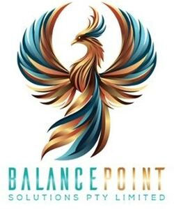

Trade Mark Journal No.2025/034 22 August 2025
WO0000001868307 (9,35,41)
Office of origin: Australia
Date of International Registration:24 June 2025
Date of designation in the UK:
24 June 2025

International priority date claimed: 27 February 2025
(Australia)
(2523576)
- Class 9
- Downloadable media content; downloadable and recorded content; downloadable pre-recorded audio, video and multimedia content; audiobooks; e-books; digital books, downloadable; videocasts; downloadable publications; downloadable apps; application software; recorded or downloadable software platforms; computer software; software for media, networks and social networks; electronic publications; educational materials [electronic]; downloadable educational course materials; educational software; training software; software for business management; mobile applications; educational mobile apps; all of the aforesaid for or relating to business management and training, business knowledge and know-how, business efficiency, career selection, human resources and recruitment, personal and professional development, leadership and team dynamics, career advancement and planning, work-life balance, career transitions, personnel management, corporate policy making, professional networking, and vocational skills; none of the aforesaid for or relating to health care or health or dietary education; none of the aforesaid being for or in relation to mathematics or finding the balance point of datasets.
- Class 35
- Information services relating to jobs and career opportunities; career advancement consulting services; career planning services; career counselling [employment advice and information]; employment counselling services; business advice and consultancy; business consultancy, management, planning and supervision; business investigations, evaluations, expert appraisals, information and research; business efficiency expert services; personnel management and employment consultancy; providing information relating to employee relocation services; providing information relating to employment recruitment; business intermediary services relating to the matching of various professionals with clients; recruitment agency services; staff recruitment consulting; preparation of résumés for others; human resources consultancy; human resources management and personnel recruitment services; employment hiring, recruiting, placement, staffing and career networking services; career placement consulting services; work analysis to determine worker skill sets and other worker requirements; business assistance; business succession planning; business management succession planning; personality testing for recruitment purposes.
- Class 41
- Career advisory services [education or training advice]; career counseling [education or training advice]; computerised training in career counselling; training in the field of business management; business training; transfer of business knowledge and know-how [training]; training of personnel in the areas of recruitment, human resources and business management; basic and advanced training for human resources development; mentoring [education and training]; business training consultancy; business mentoring services; electronic publication of information on a wide range of topics online; production of educational and instructional materials; publication of educational texts; publication of educational teaching materials; provision of online videos, not downloadable; publication of multimedia material online; on-line publication of e-books; computerised training in vocational guidance; providing coaching [training], mentoring, training, courses and workshops in the field of mental health; arranging and conducting of conferences, congresses, seminars and workshops [training]; arranging and conducting of seminars in the field of mindset coaching; conducting workshops and seminars in personal awareness; training in field of life coaching; organisation of webinars; publication of journals; personal coaching [training]; publication of educational and training guides; publication of training manuals; online educational assessment services; provision of educational examinations and tests; providing of training and education; providing training programmes; providing online training; provision of vocational skills training; analyzing of educational test scores and data for others; setting of training standards; standardized testing; arranging and conducting of workshops in the field of personal development; coaching [education and training]; education services in the field of personal coaching; all of the aforesaid relating to business management and training, business knowledge and know how, business efficiency, career selection, human resources, and recruitment, personal and professional development, leadership and team dynamics, career advancement and planning, work-life balance, career transitions, personnel management, corporate policy making, professional networking and vocational skills; none of the aforesaid relating to health care or health or dietary education; none of the aforesaid being in relation to mathematics or finding the balance point of datasets.
BalancePoint Solutions Pty Ltd
Representative: Progressive Legal Pty Ltd, Suite 801, Level 8,, 100 William Street, Woolloomooloo NSW 2011, AUSTRALIA